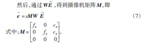
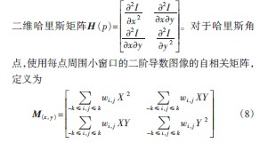
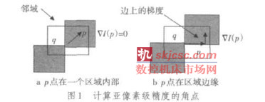
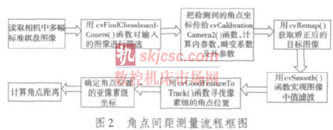
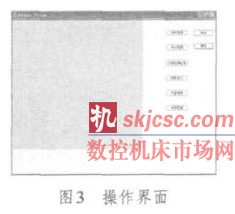
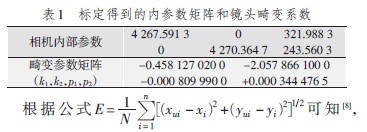

0 引言
机器视觉是在图像处理的基础上发展起来的新兴科学，基于机器视觉的测量是一种非接触测量技术，能够实现测量的自动化。高精度测量的关键是摄像机测量系统的标定，在零件尺寸测量中，一般选用的是短焦距定焦光学镜头，而短焦距光学镜头的非线性径向畸变是影响测量精度的主要因素，所以需要标定镜头的非线性畸变[1-2]。
标定后从图像中提取特征点是图像的一个重要的局部特征，它在保留了图像中物体重要特征信息的同时又有效减少了信息的数据量，哈里斯角点提取方法首先定义某些算子，通过在灰度图像上寻找该算子的极值提取特征点。在文献[3]中提到，哈里斯角点提取方法是目前效果最好最稳定的角点检测算子，它对亮度变化和刚体几何变换有很高的重复性。
OpenCV[4-5]是一个开源的计算机视觉库，自1999年1月发布Alpha版本开始，它就在许多领域、产品和研究成果中广泛应用，包括卫星地图和电子地图的拼接、扫描图像的对齐、医学图像去噪、制造业中的产品质量检测系统以及摄像机标定等领域。
高精度零件角点距离测量研究所实现的检测算法是基于开源的OpenCV。首先对摄像机进行标定，然后采用中值滤波等手段实现图像预处理，最后采用哈里斯角点检测和亚像素检测方法获取高精度角点位置。实验结果表明，检测精度高，检测效果良好，为实际问题的解决提供了新的思路。
1 摄像机标定
1.1 透镜畸变参数
机器视觉中所测量的一般为近景，对于要快速生成图像的摄像机而言，必须利用大面积且弯曲的透镜，让足够多的光线能够收敛聚焦到投影点上。透镜可以聚焦足够多的光线到某个点上，使得图像的生成更加迅速，其代价就是引入了畸变[6]。径向畸变和切向畸变为两种主要的畸变[1]。对于径向畸变，成像仪某点的径向位置按下式进行调节
xcorrected = x(1+k1r 2 + k2r 4 + k3r 6) （1）
ycorrected = y (1+ k1r 2 + k2r 4 + k3r 6)
式中：（x，y）是畸变点在成像仪上的原始位置，（xcorrected， ycorrected）是校正后的新位置。k1和k2是径向畸变的系数。切向畸变是由于透镜制造上的缺陷使得透镜本身与图像平面不平行而产生的，可以用两个额外参数p1和p2来描述
xcorrected = x +[2p1 y + p2(r 2 +2x 2)] （3）
ycorrected = y +[ p1(r 2 +2y 2)+2p2x] （4）
因此，k1，k2，k3和p1，p2构成了5个畸变参数。
1.2 摄像机参数[5]
一个二维平面上的点映射到摄像机成像仪上的映射体现了平面的单应性，如果对点E到成像仪上的点e 的映射使用齐次坐标，这种映射可以用矩阵相乘的方式表达。定义E ~ =[X Y Z 1]T ，e~ =[x y 1]T 。则可以把单应性简单表示为
e~= sH E ~（5）
参数s 是一个任意尺度比例，H由用于定位观察的物体平面的物理变换和使用摄像机内参数矩阵的投影两部分组成。物理变换部分是与观测到的图像平面相关的部分旋转R和部分平移t 的影响之和。由于使用齐次坐标，可以把R和t组合到一个单一矩阵中
W=[R t ] （6）

2 中值滤波
中值滤波主要实现过滤图像中的噪声，同时要保证图像中接插件产品信息完整。二维中值滤波[7]取以目标像素为中心的一个子矩阵窗口，根据需要选取窗口大小，对窗口内的像素灰度排序，取中间的一个值作为目标像素的新灰度值，其特点是较好地保护图像边缘同时去除噪声。
中值滤波的窗口有很多形状，如矩形、菱形、圆形、十字形等，不同的窗口形状有不同的滤波效果。对有缓慢且较长轮廓线的物体适合用矩形或圆形，对于有尖顶角的图像适合采用十字形，针对角点的特点，需采用十字形中值滤波。
3 提取角点和亚像素检测
3.1 角点提取
图像预处理后，需提取有效的角点位置。首先定义

式中：wi，j是可以归一化的权重比例；X = Ix (x + i,y + j ) ， Y = Iy (x + i,y + j ) 。哈里斯定义的角点位置位于图像二阶导数的自相关矩阵有两个最大特征值的地方。哈里斯最原始的定义是将矩阵H（p）的行列式与H（p）的迹相减，再将差值同预先给定的阈值进行比较。Shi和Tomasi提出了若两个特征值中较小的一个大于最小阈值，则会得到强角点，改进的角点方法可以得到比原始哈里斯方法更好的结果[4]。
3.2 亚像素检测
上述的角点检测只能获得像素的整数坐标值，对于高精度来说如果需要确定图像中一个尖锐的峰值点位置，峰值的位置往往都不会恰好位于一个像素正中心。需要采用亚像素检测方法，将求得的角点位置精确到亚像素级精度。
实际计算亚像素级的角点位置时，解的是一个点积表达式为0的方程组（如图1的两种情况，点积都为0），其中每一个方程都是由q 邻域的一个点产生。搜索窗口的中心是整数坐标值的角点，并从中心点在每个方向上扩展指定的像素。这些等式构成一个可用自相关矩阵的逆来求解的线性方程组。

每找到一个q 的新位置，就需要以这个新的角点作为初始点进行迭代直到满足定义的迭代终止条件。
4 OpenCV零件角点距离
测量实现OpenCV提供了很多摄像机标定及角点检测方面的库函数，以Visual Studio 2005为软件开发平台，给出零件角点间距测量算法的流程框图，如图2所示。

读取从相机中采集的多幅不同位置和角度的标准棋盘图像，采用cvFindChessboardCorners( )函数对输入的图像进行筛选，选出符合标定用的图像，并用cvDrawChess⁃boardCorners( ) 函数在图上画出角点。用cvCalibra⁃数，并保存到相应的文档中。调用摄像机的内外部参数、畸变系数文档，采用cvRemap( )函数矫正需要检测的目标图像。
对于矫正后的图像，采用3×3中值滤波去除图像噪声。采用cvGoodFeatureToTrack( )函数寻找像素级的角点位置，确定像素级角点位置后，实现亚像素级角点位置确认，获取亚像素角点坐标，根据采集的标准棋盘图像，计算像素点间的实际距离值，获取角点的距离。
5 实验和结果分析
依据本文阐述的角点间距测量原理和算法，在Visu⁃al Studio 2005环境下，调用OpenCV2.0 库函数，开发了基于MFC 对话框结构的亚像素级的角点间距测量程序，程序经过严格测试，运行稳定，没有出现内存泄露的情况。操作界面如图3所示。

选取4×29的标准棋盘为标定目标，棋盘格子的宽度为0.1 cm。从不同的距离和角度，选取21幅656×492像素的图像作为标定用图。标定得到的内参数矩阵、镜头畸变系数如表1所示。

(xui,yui )为用图像处理得到的标定点像素坐标经过一系列变换得到的图像物理坐标的理想坐标，(xi,yi )为世界坐标的点经过投影得到的理想状况下图像物理坐标系下的坐标。
选取合适的零件图像，实现图像矫正、图像预处理、亚像素级角点检测、角点间距测量。如图4所示，选取角点的实际距离为1.4 cm的零件。

如图4c，获取零件角点坐标分别为（63.883 3，253.943 4）和（299.334 7，258.910 6），根据相机拍摄的标定板图像可得每33.6个像素为0.2 cm，由此可得零件角点距离为1.401 808 cm，偏差为0.001 808 cm。
6 小结
通过实验和检测结果的分析比较，这种基于OpenCV的高精度零件角点间距测量方法有效地提高了测量精度，在OpenCV中采用该角点检测方法而编写的检测程序具有运算效率高、标定结果精度高、角点定位精度高、跨平台移植性好等特性，可以有效地应用于其他计算机视觉系统中。
如果您有机床行业、企业相关新闻稿件发表，或进行资讯合作，欢迎联系本网编辑部， 邮箱：skjcsc@vip.sina.com